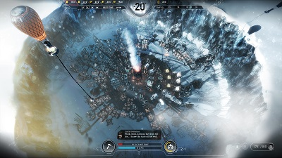
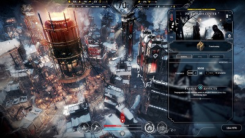
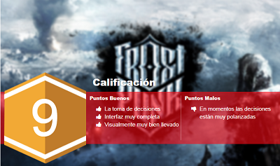

RESEÑA - FROSTPUNK
Los juegos en los que los desarrolladores encuentran buena idea el que nosotros nos pongamos a gestionar recursos y tomar decisiones sobre la correcta organización de un espacio determinado cuál mandatario, son muchos en el mercado aunque no sean muy populares, sin embargo, eso no quiere decir que debes en cuando, y a expensas de su poco conocimiento, encontremos por ahí algún juego del género que nos cause realmente un interés genuino, ya que no solo se trata de tomar decisiones, sino que también veamos un poco de lo que trata la naturaleza humana y lo difícil que es eso de tomar decisiones a expensas de muchos habitantes de una sociedad, y eso es solo un punto de los tantos que hacen tan grande a Frostpunk.
Para empezar y para que vean que no estamos ante un juego improvisado hecho por hijos de vecinos, tenemos que decir que Frostpunk es el nuevo título de los creadores de This War of Mine, por lo que el pedigree es adecuado. Se trata de un juego de supervivencia y estrategia donde una sociedad se cuestiona la idea de hasta qué punto son capaces de llegar las personas cuando se ven empujadas al borde de la extinción. En un mundo totalmente congelado, la gente desarrolla una tecnología basada en el vapor para hacer frente al frío extremo. El dirigente de la ciudad, o sea nosotros, tiene que gestionar tanto la situación particular de los habitantes como la infraestructura que garantize su supervivencia colectiva. Las habilidades tácticas del líder se ponen a prueba con desafíos que a menudo pondrán en tela de juicio cuestiones morales y los elementos fundamentales de lo que consideramos sociedades organizadas.

Es en este punto en el que el elementos de la eficiencia y la gestión de recursos a menudo entrarán en conflicto con la empatía y la toma de decisiones. Por lo que no todos será blanco o negro, ser un dirigente humanista o maquiavélico, sino que habrá matices, diferentes grises que le agregan al juego tensión y muchos entretenimiento. Mientras que la gestión de la ciudad y la sociedad ocupan la mayor parte del tiempo del líder, llega un momento en el que la exploración del exterior se hace necesaria para entender la historia y el momento presente. ¿Qué decisiones tomarás para garantizar la supervivencia de la sociedad? ¿Qué harás cuando te veas entre la espada y la pared? ¿En quién te convertirás en el proceso? Las respuestas a esas preguntas dependen tanto de nuestro estilo, como de nuestra calidad como dirigentes.
Frostpunk es un juego difícil de recomendar, dado al complicado sistema que seguro amarás u odiarás, porque no se sustenta en solo mecánicas que ayuden a la supervivencia en un juego de gestión de recursos, 11 bit studios espera que nosotros usamos el factor emocional para que podamos encontrar mucha más gracia en el juego. Todo se sustenta en la esperanza y en la voluntad de vivir. Nuestra destreza a la hora de infundir y propagar esos sentimientos entre los ciudadanos será un factor fundamental que determinará nuestro éxito o fracaso.

Aunque nos encontramos en una Nueva Londres, hay mucho por descubrir en el mundo helado que se extiende fuera de los límites de nuestra ciudad. Las expediciones, aunque sean peligrosas, nos pueden garantizar avances tecnológicos, valiosos recursos y maneras de aumentar la población de nuestra ciudad: puede que haya gente ahí fuera, y su destino está enteramente en nuestras manos. Todo esto adornado con un diseño steampunk hermoso.
A forma de conclusión, Frostpunk es un juego para un público específico que gusta de estos particulares títulos, pero si eres un gamer hecho y derecho, te recomendamos les des un vistazo a esta complicada pero emocionante propuesta, no te llevará de la mano y eso puede que asuste a más de uno, pero eso mismo ayuda a que cada logro o correcta decisión sea nuestro logro y eso dice más que mil palabras.
